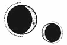

CAPÍTULO 2
Había un necrómata cerca. Sola e incapaz de enfocar la vista, Helena percibía el olor a carne podrida y a conservantes químicos. Los inmarcesibles usaban a los muertos como marionetas para realizar las tareas desagradables o de poca importancia. Mientras esperaba encadenada, se preguntó para qué estarían empleando a aquel necrómata. Echó un vistazo a su alrededor, buscando sombras más allá de las cortinas.
—¿Marino?
Alguien susurró su nombre en voz tan baja que podría haber sido tan solo la brisa.
Helena se giró y alcanzó a distinguir un rostro asomándose por la cortina que los separaba. Entrecerró los ojos y consiguió enfocarlos lo suficiente para ver una cara y un cabello de color claro.
—Marino, ¿eres tú?
Helena asintió, intentando aún descifrar quién era.
—Soy Grace. Era camillera en el hospital. —Se deslizó entre las cortinas mientras hablaba, con un marcado acento del Norte que enfatizaba las consonantes.
—Perdona, estoy… desorientada —respondió Helena.
—No esperaba verte aquí.
Grace se acercó. Al salir de entre las sombras, Helena notó que era joven, a pesar de sus rasgos hundidos. Su expresión mostraba una mezcla de miedo y curiosidad.
Helena abrió los ojos de par en par.
El rostro de Grace estaba marcado por cicatrices: unos cortes largos que le atravesaban las mejillas, la barbilla y la nariz. No eran heridas accidentales, sino intencionadas.
Helena intentó levantar la mano, pero los grilletes en sus muñecas se lo impedían.
—¿Qué te pasó? —preguntó.
Grace la observó desconcertada y, al seguir la mirada de Helena, llevó la mano a su rostro para tocarse la cara.
—Ah, ¿los cortes? Todas los tenemos.
—¿Qué? ¿Por qué los liches…?
Grace sacudió la cabeza con vehemencia.
—Baja la voz. —Grace miró a su alrededor rápidamente y olfateó el aire. Después, volvió a mirar a Helena con ojos furiosos—. A veces usan a los necrómatas para espiarnos. Hay uno aquí, ¿no lo hueles? No puedes llamar «liches» a los inmarcesibles. —La palabra era apenas un susurro—. Si nos escuchan…, habrá… consecuencias.
Helena se apresuró a asentir. Temía que Grace saliera corriendo si no tenía cuidado.
Grace se acercó a ella un poco más.
—No fueron los inmarcesibles quienes nos hicieron esto. —Se señaló la cara—. Fuimos nosotras mismas. Los inmarcesibles pueden hacer lo que quieran con nosotras, con cualquiera que pertenezca a la Resistencia. Ahora está de moda tener necrómatas en vez de contratar empleados. Pero hay veces… que solo quieren algo con lo que jugar. En una fiesta o… después de salir por la noche. —Hizo un gesto—. Nadie interviene para evitarlo. Incluso los que no son inmarcesibles o pertenecen al gremio les siguen la corriente, porque todos esperan que eso aumente sus posibilidades de ganar también la inmortalidad.
Grace se encogió de hombros de forma poco natural.
—Pero, si tienes mala pinta, no te usan mucho tiempo. —Suspiró entrecortadamente y miró a Helena con dureza—. ¿Dónde has estado?
Helena negó con la cabeza mientras intentaba asimilar todo lo que Grace le había contado.
—Me llevaron a un almacén… después de…
Grace entrecerró los ojos.
Helena la miró, vacilante.
—¿La Llama Eterna sigue…?
—No. —Grace sacudió la cabeza con vehemencia y su expresión se tornó en rabia—. Están todos muertos. Todos y cada uno de ellos. Después de la muerte de Luc, nos enviaron a los demás a la fábrica del Reducto, bajo la presa. La mayoría de nosotros no puede marcharse. Necesitas varios meses de buen comportamiento para que te den permiso y hay que llevar esto siempre. —Levantó la mano para enseñar una banda de cobre, más brillante y mejor ajustada que la de Helena—. Tenemos que fichar por la mañana y por la noche porque hay toque de queda. Si alguien desaparece más de veinticuatro horas… —Tragó saliva—. Si no aparece, envían al Sumo Inquisidor para que le dé caza, y siempre está muerto cuando lo traen de vuelta. A la custodio le gusta colgarlos, los deja así durante días y, cuando empiezan a pudrirse, los reanima y los pone a «trabajar» para nosotros antes de mandarlos a la mina. Dice que así no se nos olvidan las reglas.
—¿Quién…? —Helena se obligó a preguntar, aunque temía saberlo.
Grace titubeó. Sus ojos se suavizaron ligeramente.
—Lila Bayard fue la primera a la que trajo de vuelta.
Grace seguía hablando, pero Helena no la escuchaba. Lo único que oía una y otra vez era «Lila Bayard fue la primera».
Lila no…
Poco a poco volvió a escuchar la voz de Grace.
—La custodio la obligó a ponerse la armadura paladina y la dejó en la puerta. Ya llevaba un tiempo fallecida. Debió de llegar bastante lejos. Le faltaba más de la mitad de la cara y ya no tenía la prótesis de la pierna, así que le soldaron una barra de hierro para mantenerla en pie. No… no puede moverse. Simplemente permanece allí. Pasamos a su lado todos los días. —Grace pareció entonces percatarse del semblante de Helena y bajó la mirada—. Ahora solo quedan sus huesos. La custodio cree que es… divertido.
Helena sacudió la cabeza, le costaba aceptarlo, pero, por supuesto, Lila estaba muerta. Para capturar y asesinar a Luc, sus paladines debían morir. Ese fue el juramento que hicieron: morir por el principado.
Helena tragó saliva con dificultad.
—Pero seguro que en algún lugar… la Resistencia…
—¡No existe la Resistencia! —exclamó Grace en un susurro—. ¿De verdad crees que íbamos a seguir luchando cuando toda la Llama Eterna murió? No sirve de nada. El Sumo Inquisidor los mata a todos. Por cualquier movimiento, incluso los susurros están penalizados con la muerte. Tiene un… un monstruo que usa para cazar. Es absurdo huir, resistir u organizarse, a menos que quieras ser el próximo cadáver.
Helena se sumió en el silencio. Grace la observaba con recelo, nerviosa. Parecía que iba a salir corriendo en cualquier momento.
—¿Quién es el Sumo Inquisidor? —preguntó Helena, rezando por ser capaz de formular esa pregunta. No recordaba el título.
Grace negó con la cabeza.
—No lo sé. Sigue llevando el yelmo que usaban los inmarcesibles durante la guerra. El Sumo Nigromante es demasiado importante para aparecer en público, así que manda al Sumo Inquisidor en su lugar. Es una especie de vivemante, pero no como los demás. Mata a la gente sin tan siquiera tocarla.
—La resonancia no funciona así —repuso Helena, corrigiéndola de forma automática—. Sin sellos, solo se puede crear un canal estable cuando se establece un contacto y luego…
—Sé cómo funciona la resonancia —la cortó Grace sin miramientos—. Pero he visto cómo lo hace. La semana pasada… —A Grace le tembló la voz; su nuez subió y bajó varias veces—. Había un grupo de contrabando… Hemos tenido escasez de grano. La mayor parte del que recibimos en el Reducto está podrido. Algunos estaban trayendo comida extra de fuera. No era mucho, pero la custodio oyó rumores de que los prisioneros se estaban organizando. Eran diez personas: ejecución pública. El Sumo Inquisidor los mató a todos a la vez. Lo hizo de forma «limpia» para que duraran más tiempo trabajando en las minas de lumitio.
Grace pareció estremecerse mientras hablaba, como si el mero recuerdo la paralizara.
—Los que quedamos estamos sobreviviendo. Eso es lo único que importa. —Las últimas palabras las susurró como si hablara más para sí misma que para Helena.
—¿Por qué estás aquí, Grace? —preguntó Helena mirando a su alrededor, aunque no veía mucho—. Esto no es… No estamos en el Reducto, ¿verdad?
Grace negó con la cabeza.
—No. Esto es ahora la Central. Es donde los inmarcesibles hacen todos sus experimentos. Yo… —Se atragantó con la palabra—. Tengo tres hermanos. Son más pequeños que yo. Ninguno de ellos era lo bastante mayor para alistarse, así que no formaron parte de la Resistencia. Mi hermano Gid tendrá edad de trabajar dentro de poco y podrá salir del Reducto. Recibirá un sueldo de verdad cuando llegue el momento. Tenemos… tenemos que resistir hasta entonces.
—Grace…
—Están ofreciendo mucho dinero por los ojos. Solo uno ya nos permite subsistir durante meses.
Helena la miró desconcertada.
—¿Para qué quieren los ojos?
Grace negó con la cabeza.
—No lo sé. A mí solo me interesa el dinero.
Si no hubiera estado encadenada a la cama, Helena se habría acercado a ella.
—Grace, si lo haces…, nunca podrás recuperarlos…
A Grace se le escapó una carcajada repentina, casi enajenada.
—Sé que los ojos no crecen. Por eso pagan tanto.
—Sí, pero…
—¿Para qué quiero quedármelos? —Grace hablaba muy nerviosa—. ¿Para tener dos ojos con los que ver morir de hambre a mis hermanos? ¡No hay comida! —Ya no estaba susurrando. En su rostro, las cicatrices se enrojecieron y crisparon—. No sabes… No tienes ni idea de cómo vivimos ahora. ¿Dónde has estado? ¿Por qué no salvaste a Luc? Deberías haberlo hecho, pero no lo hiciste. ¡Murió! Todos lo vimos. Y los Bayard están muertos también. Y todos los de la Llama Eterna están muertos…, menos tú. ¿Y crees que me preocupan mis ojos?
Antes de que Helena pudiera contestar o que Grace pudiese decir algo más, oyeron unos pasos que se acercaban.
El terror se abrió paso por el semblante de Grace, que huyó rápidamente.
Alguien apartó las cortinas de Helena hacia un lado, y aparecieron varias personas. Cuando una de ellas se acercó a la cama, Helena reconoció a la interrogadora. Las arrugas de su rostro estaban marcadas y en tensión.
Helena no distinguía a quienes estaban detrás de ella, pero tenían la piel de un color gris poco natural que le erizó el vello al instante. El espacio delimitado por las cortinas se impregnó del olor a conservantes.
—Es esta —dijo la mujer—. Está bien atada, como os aseguré. —Miró con nerviosismo a los cuerpos, que parecían moverse como si fueran uno solo.
Necrómatas, todos eran necrómatas.
La mujer miró a Helena.
—El Sumo Nigromante te ha hecho llamar. Quiere presenciar tu análisis en persona.
Helena sintió una presión en el pecho y forcejeó contra sus ataduras.
—No.
No podía hacerlo, no era capaz de verlo de nuevo. La única vez que había visto al Sumo Nigromante, Morrough, fue cuando este asesinó a Luc.
Luc, que había sido todo su mundo.
Helena se unió a la Resistencia y había jurado lealtad a la Orden de la Llama Eterna no por fe, sino por Luc Holdfast. Porque tal vez no creía en los dioses, pero sí creía en él, que era bueno y amable y se preocupaba por los demás.
Prometió que haría cualquier cosa por él.
Pero Luc murió ante sus ojos.
Se le estaba cerrando la garganta.
—No —repitió mientras la cama rebotaba al ponerse en movimiento. Sus captores no le prestaron atención.
Fue en los ascensores cuando Helena supo dónde estaba, qué era la Central. Habían quitado todos los murales y el arte de las paredes, también habían desaparecido los cuadros y las decoraciones, dejando el interior en bruto y vacío, pero reconoció la detallada ornamentación de la puerta metálica del ascensor.
Era algo que había visto a diario desde que tenía diez años.
Estaba en la Torre de Alquimia, en el corazón de la Academia de Alquimia que habían fundado los Holdfast.
Eso era la Central.
—¿Qué habéis hecho? —le temblaba la voz del horror y la pena—. ¿Qué habéis hecho?
—Tranquilízate —le dijo la mujer con los dientes apretados mientras le dirigía una mirada fulminante. No dejaba de mirar por el rabillo del ojo a los necrómatas que las rodeaban.
Helena no podía tranquilizarse. Era como haber vuelto a casa para darse cuenta de que habían destrozado todo lo que la hacía acogedora, que la habían destripado de su belleza, desollado todo cuanto le era familiar.
Helena había cruzado medio mundo para estudiar en esa Torre. Luc siempre estuvo muy orgulloso de la Academia que construyó su familia. Había sido el corazón de Paladia. Helena lo había visto con sus propios ojos: toda la historia y su significado. Ahora lo habían arrasado y destruido por completo.
Las repercusiones de la muerte de Luc eran más de lo que podía asimilar, pero, por algún motivo, aún tuvo la capacidad de llorar esta pérdida. Se le escapó un sollozo agudo.
Unos dedos agarraron la base del cráneo de Helena hasta que las uñas se clavaron en su piel.
Estaba hundiéndose hasta el fondo.
Un túnel muy largo, una oscuridad retorcida.
Unas manos frías sin vida y un olor a muerte.
Cuando se le despejó la mente, se dio cuenta de que se encontraba atada encima de una mesa. Había una luz brillante en el techo, un foco que apuntaba directamente a Helena y que hacía desaparecer la habitación que la rodeaba.
A su lado, un hombrecillo de nariz estrecha no dejaba de tocarle la cara con unos dedos sudorosos y húmedos. La palpó entre los ojos, en las sienes, y metió sus dedos en su cabello para comprobar su cráneo.
—Esto es… toda una maravilla de la transmutación humana —decía el hombre en un tono agudo y ligero. Tenía acento, pero no era un dialecto del Norte, más bien sonaba a algo occidental—. Una vivemancia de esta categoría es… milagrosa. Ha hecho bien en llamarme.
Se produjo un silencio largo y agobiante.
Tosió.
—La… la cosa es… Esto es… imposible. No… no se puede hacer.
—Es evidente que sí. La prueba la tienes aquí delante —replicó la mujer con dureza desde el lado contrario. Helena apenas lograba verla en la profunda oscuridad.
—Sí, es cierto, doctora Stroud. Por supuesto, tiene razón. Pero… aplicar la vivemancia en un cerebro siempre ha sido un procedimiento extremadamente delicado. Una transmutación de esas características y con esta complejidad va más allá de toda evidencia científica conocida. La memoria es algo misterioso, muy maleable cuando se manipula. No es un lugar, es… el viaje de la mente. Un camino. Cuanto más importante y experimentada sea la persona, más fuerte será el camino. Si se ha hecho poco en la vida —sus dedos se movieron—, entonces se desvanece.
—Ve al grano —dijo la doctora Stroud.
—Sí, sí. Hay partes del cerebro que se pueden modificar. En los laboratorios hemos hecho vivisecciones a muchos cerebros humanos para luego reconstruirlos de distintas maneras con cierto éxito y… también con fracasos. Sin embargo, esta transmutación va más allá. M-m-memoria. Lo que han hecho aquí… —Helena sintió algo húmedo en el rostro y se dio cuenta de que el hombre estaba transpirando encima de ella—. Esto es una alteración de lo inalterable. Alguien… ha desmantelado los caminos de su mente para crear rutas alternativas. ¿Cómo es posible que lo haya hecho sin saber todos sus pensamientos y recuerdos? No. No. Es científicamente imposible.
—Creía que la mente era tu especialidad.
La voz que había hablado emergía de la oscuridad, era grave y áspera.
El hombre gimoteó. Parecía a punto de echarse a llorar.
—El… cerebro, Su Eminencia. —Le hizo una reverencia a las sombras—. Pero esta obra escapa a mis conocimientos. Bennet y yo, ¿recordáis nuestros trabajos para la causa? Confío en que… Los recuerdos no pueden regenerarse sin más; son la mente y el espíritu los que deben forjarlos. Ninguna fuerza externa puede alterar el espíritu…, las… las fiebres…
—¿Hay alguna forma de descubrir lo que oculta?
El hombre abrió y cerró la boca, igual que un pez, contemplando la oscuridad, como esperando que fuese a tragárselo.
—Los Holdfast están muertos —afirmó la voz áspera—, la Llama Eterna ha sido erradicada de este mundo. ¿Por qué esconderían algo en su mente?
Solo hubo silencio como respuesta.
—¿Quién la metió en ese almacén?
Stroud dio un paso al frente.
—No hay nada que lo confirme, pero, según los informes, Mandl era la supervisora en aquella época. Fue poco antes de que ascendiera y la trasladaran al Reducto.
—Traedla.
Stroud asintió y desapareció. Al hacerlo, las sombras se movieron.
Helena solo veía por el rabillo del ojo, pero, aun así, se percató de cuando Morrough emergió de la oscuridad.
El Sumo Nigromante no se parecía en nada a como ella lo recordaba. Cuando asesinó a Luc, era humano. Ahora había mutado. Sus brazos sobresalían de las articulaciones en un ángulo imposible, y tenía casi el tamaño de dos hombres.
Al principio, pensó que llevaba una máscara. El Sumo Nigromante había acudido enmascarado a la celebración. Una medialuna enorme y dorada le había tapado la mitad de la cara como en un eclipse de sol.
Sin embargo, cuando se acercó más a ella, se dio cuenta de que no era una máscara lo que estaba viendo. La cara de Morrough parecía como una calavera de lo hundidos que estaban sus rasgos. La piel era tan translúcida y pálida que dejaba entrever hasta el hueso.
Donde antes tenía los ojos, ahora había dos cuencas vacías y negras, como si se los hubieran quemado con carbón ardiente.
Aun así, veía a Helena.
Caminó hacia ella con una mano estirada, pero algo sucedía: la piel se estiraba y plegaba de forma extraña, como si tuviera demasiados huesos dentro. Helena sintió el dolor de su resonancia atravesándole el cerebro antes de que la rozara con los dedos.
Su visión se tornó roja.
Oyó que gritaba hasta reventarse los oídos, cada vez más fuerte, mientras los recuerdos estallaban en su mente. Una cascada de imágenes se abrió paso por su consciencia.
Allá donde mirara había gente muriendo. Tenía las manos llenas de sangre y los cadáveres se amontonaban por todas partes.
Estaba arrodillada en el suelo, uniendo torsos, caras y extremidades, intentando recomponerlos, cosiéndolos para lograr completarlos. Una y otra y otra vez. Cuerpos en carne viva, llenos de quemaduras, tan consumidos por el fuego que no distinguía sus rostros.
Siempre había otro cuerpo, y otro más.
La resonancia cavó aún más profundo, y Helena gritó con más fuerza todavía.
Vio a Luc, tan vívido como si estuviera frente a ella. Su bello rostro, sus ojos tan azules como el cielo de verano, reflejando la luz dorada del sol.
Luego desapareció. Había sangre por todas partes. Lo único que veía era una luz roja, fragmentada y quebradiza, que se mecía en el techo. Y los gritos.
Sus propios gritos. Tenía las cuerdas vocales deshilachadas; un dolor desgarrador le atravesaba los pulmones y la garganta. Cada inhalación le provocaba una punzada lacerante en el pecho, como si su corazón estuviera a punto de romperse.
El hombrecillo mascullaba «No os recomiendo…» una y otra vez, cubriéndose la cabeza con los brazos como si quisiera protegerse.
Helena oyó que alguien llamaba a la puerta y Stroud volvió a aparecer, aunque apenas se fijó en Helena.
—Mandl viene de camino. Y… —vaciló al hablar—. He traído a Shiseo. Pensé que podría tener alguna información sobre la prisionera. Trabajó para la Llama Eterna. Necesita un nuevo par de anuladores y creí que podría encargarse él mismo antes de marcharse.
Helena oyó que algo se agitaba en la oscuridad y giró el cuello todo lo que pudo mientras entrecerraba los ojos para ver al traidor.
Un hombre de rostro redondeado y cabello oscuro apareció portando un pequeño maletín. Se detuvo a hacer una breve reverencia ante el Sumo Nigromante.
Morrough hizo un gesto en dirección a Helena.
—¿Qué tipo de vivemancia utilizaba la Llama Eterna?
Shiseo se acercó un poco más, y Helena se percató de que provenía del Imperio Oriental, del Lejano Oriente. Solo le dedicó un instante a la mirada acusadora de Helena antes de apartar la vista.
—Lo siento. —Volvió a hacer una breve reverencia—. Solo acudían a mí de vez en cuando por mis conocimientos metalúrgicos.
Helena dejó escapar un suspiro de alivio.
—Seguro que sabes algo… Trabajaste en sus laboratorios —insistió Stroud con impaciencia—. ¿La reconoces, al menos?
Shiseo miró a Helena de soslayo.
—Creo que era sanadora —dijo en voz baja mientras volvía a revisar su maletín.
Helena reprimió un gesto.
Stroud miró de nuevo a Helena con los ojos entrecerrados.
—¿En serio? ¿Sanadora, has dicho? —preguntó como si escupiera veneno. Se aclaró la garganta y observó a su alrededor—. Por supuesto, sabía que había vivemantes que apoyaban a la Llama Eterna. Como si martirizarse les fuera a conceder la aceptación, a pesar de que la Fe consideraba sus talentos una abominación. —Su mirada era feroz—. No me percaté de que esta era uno de ellos.
Nadie dijo nada y Stroud enrojeció.
—Me habría dado cuenta si hubiera tenido más tiempo para revisar los registros de la Resistencia. ¿Pero por qué transmutarían la mente de una sanadora?
Shiseo se inclinó ante Stroud.
—No sabría decirle.
El ambiente empezó a caldearse. Morrough suspiró como una ráfaga de viento.
—No sabe nada. Ponle la anulación y lárgate de aquí.
Shiseo hizo otra reverencia y levantó tanto como pudo la mano de Helena para inspeccionarle la muñeca y las esposas que la rodeaban. Tenía la piel suave para ser metalúrgico.
—Estas son… son un modelo muy antiguo. No suprimen del todo la resonancia —comentó. Deslizó los grilletes de Helena por el antebrazo todo lo que pudo, y esta sintió como si la estática de la supresión se desplazara hasta su cerebro.
Shiseo presionó con manos hábiles el brazo de Helena, hasta encontrar la hendidura justo debajo de la muñeca y entre los dos huesos del antebrazo.
Su latido palpitaba entre los dedos de Shiseo. Este lo sintió un instante, apretó un poco y luego se apartó para girarse hacia Stroud.
—Aquí.
Los dedos duros y secos de Stroud rodearon la muñeca de Helena. Ella sintió un breve cosquilleo de la resonancia de Stroud y, acto seguido, perdió la sensibilidad desde la mano hasta el codo y su cuerpo se quedó inerte y paralizado. Sin previo aviso ni explicación, Stroud sacó algo del maletín. Al relucir bajo la luz, Helena vislumbró el mango redondeado y la punta larga y afilada de una lezna.
Con la destreza que da la práctica, Stroud introdujo la punta en la muñeca de Helena. Esta no sintió nada, pero se le cerró la garganta y se le encogió el estómago cuando contempló a Stroud trazar lentos círculos con la lezna hasta hundirla entre los huesos. La punta salió por el otro lado.
Cuando Stroud retiró la herramienta, había una gota de sangre en la punta y un agujero atravesaba la muñeca de Helena. Era una herida limpia. La piel y el músculo desgarrados, así como las venas partidas, volvieron a cerrarse de inmediato.
Stroud dejó la lezna a un lado y manipuló la mano de Helena, doblándola hacia delante y hacia atrás para evaluar el rango de movimiento. Aunque volvió a sentirla, la parálisis persistía.
—Los nervios y las venas están intactos —dijo Stroud, y la soltó.
Helena solo pudo observar mientras Shiseo intervenía e introducía un tubito con muescas por el agujero que le atravesaba la muñeca, hasta que el extremo salió por el otro lado. Cuando el tubo estuvo en su sitio, la leve sensación de resonancia que Helena sentía en la mano izquierda desapareció por completo.
Fue como si le arrebataran uno de los sentidos.
Notaba el tubo dentro de su cuerpo, irradiando una sensación adormecida, como de inercia.
Shiseo sacó entonces una cinta de metal, suave y reluciente por un lado y con estrías por el otro. Deslizó la parte estriada por la ranura de uno de los extremos del tubo y luego envolvió la cinta alrededor de la muñeca de Helena para introducirla por el extremo contrario. Así, el tubo quedó sujeto. Después continuó envolviéndole la muñeca con la cinta de metal.
Inspeccionó la tensión y el ajuste, alineó todas las capas y, con un simple chasquido, estas se transformaron en un sólido anillo de metal que se ajustaba perfectamente a su muñeca.
No tenía cierre ni forma de abrirse sin resonancia.
Luego, Shiseo introdujo un alambre con una forma extraña en una abertura diminuta del antiguo grillete. El mecanismo interior cedió y el grillete se abrió. Shiseo lo recogió con cuidado, como si fuera una valiosa antigüedad, y lo guardó en su maletín. Después, se situó a la derecha de Helena.
Esta buscó desesperadamente algo de la resonancia que le quedaba. Intentó concentrarse para recordar la sensación de quién y qué era, sabiendo que desaparecería en cuestión de minutos.
Shiseo estaba quitándole el segundo grillete cuando se abrió la puerta y entró una vigilante.
—Custodio Mandl.
Una mujer con uniforme recorrió la habitación a zancadas; su paso rápido y decidido se detuvo al ver a Helena.
Tenía una boca enorme que se abrió de par en par por la sorpresa.
—¿Qué le hiciste a esta prisionera, Mandl? —preguntó Morrough. Había desaparecido entre las sombras, pero su voz emergió de nuevo. Ahora sonaba más amenazante.
Mandl se postró de inmediato, desapareciendo de la vista de Helena.
—Su Eminencia… —Su tono suplicante provenía del suelo.
—Te salvé de los Holdfast y de la Fe. Te salvé de todos los nigromantes y vivemantes como tú, que vivían como ratas, temiendo que la Llama Eterna os castigara por vuestros «talentos antinaturales». Te di el poder para ascender sobre aquellos que habían pretendido subyugarte. ¿Y ahora me entero de que me has traicionado?
—¡No! ¡No fue una traición! Soy leal. Leal a nuestra causa ¡y leal a vos! Solo fue un estúpido deseo de venganza, lo confieso. Quería que sufriera. Pero yo nunca os traicionaría.
—Explícate.
Mandl se incorporó, todavía de rodillas y con la cabeza agachada, pero con la voz temblorosa de la emoción.
—¡Es una traidora a los vivemantes! ¡Me atormentó! Se creía mejor que yo por formar parte de la Academia de los Holdfast; se pensaba que su vivemancia estaba bendecida por la Llama Eterna. ¡Merecía un castigo!
Helena miró a la mujer, aturdida y desconcertada.
—¿Manipulaste a una prisionera y sus informes por… envidia? —Stroud parecía atónita—. ¿Por qué no diste parte de sus habilidades?
Mandl se volvió a encoger.
—Me daba miedo que recibiera un trato de favor si se sabía la verdad. Que la encontraseis útil y no fuese castigada como se merecía.
Stroud se inclinó sobre ella.
—¿Y qué castigo pensabas que se merecía?
Mandl tragó saliva, nerviosa.
—L-la dejé consciente en el tanque de suspensión. Mi intención era volver a por ella. Quería que estuviera atrapada, que lo supiera y temiera lo que podrían hacerle, pero entonces me trasladaron al Reducto y ascendí. Tenía miedo de que ese ocasional error de juicio fuera visto como una decepción, así que no lo conté. ¡Pero jamás traicionaría nuestra gran causa!
—Ha pasado catorce meses en ese almacén desde que te transfirieron. ¿Por qué no hay registros? —Stroud sonaba muy escéptica.
—Pensaba rellenar sus informes cuando hubiera… terminado con ella. Al irme, supuse que habría muerto y que nadie se enteraría. ¡Perdonadme! No hice nada más, lo juro. —Mandl se tiró de nuevo al suelo.
—Ahora veo que he sido demasiado generoso —dijo Morrough. Su rostro espeluznante y las cuencas vacías de sus ojos emergieron de entre las sombras. Ladeó la cabeza como si mirara a Mandl—. No te mereces mi confianza.
—¡Por favor! Su Eminencia, se lo suplico… Deme…
Mandl dejó de hablar cuando una fuerza invisible la hizo ponerse en pie. La parte delantera del uniforme gris se desgarró al estallar su pecho. Las costillas se le abrieron, acompañadas de un chorro de sangre que brotaba sin cesar.
A Helena se le erizó la piel y sintió el miedo enroscándose en sus entrañas cuando el olor cálido y húmedo de la sangre fresca y los órganos descubiertos inundó la habitación. En el aire vibraba algo extraño, y ella lo notaba cada vez que introducía aire en sus pulmones.
Pero Mandl no había muerto, pese a estar abierta en canal.
Levantó las manos e intentó cerrarse las costillas con una de ellas y protegerse de Morrough con la otra. Sus pulmones expuestos palpitaban con desesperación.
—¡Deme otra oportunidad, por favor! ¡No os fallaré! Lo juro. No os arrepentiréis.
—No, no volverás a fallarme —replicó Morrough. Su voz áspera casi sonó amable cuando metió la mano en el pecho abierto de Mandl y sacó de entre sus pulmones una pieza de metal resplandeciente que había encajada en algún sitio junto a su corazón. Estaba envuelta en finos tentáculos de vísceras que se aferraron tanto al metal como a los dedos de Morrough cuando este la arrancó.
Al quitarla, el cuerpo de Mandl cayó al suelo, silencioso, muerto.
Morrough suspiró suavemente y pareció encogerse un instante antes de enderezarse con el metal en las manos. A pesar de la sangre, la pieza brillaba con un intenso resplandor propio del lumitio.
Hizo un ademán con la otra mano. Un necrómata surgió de entre las sombras como si fuera un animal acechando. Era una mujer joven en fase temprana de necrosis que todavía llevaba los harapos del uniforme del hospital de la Llama Eterna. Tenía un semblante inexpresivo y un tajo en el uniforme dejaba a la vista un pecho lleno de venas negras entrelazadas.
Cuando el cadáver llegó hasta Morrough, se estiró, y este le introdujo la pieza de metal. Helena oyó el leve crujido de un hueso fracturado y vio que se le abría un agujero morado, cubierto de sangre seca, en el centro del pecho.
La mujer cadavérica se estremeció y, acto seguido, su semblante se transformó. Dejó de mirar al vacío.
Trastabilló y soltó un gemido agudo al contemplar sus dedos negros y su cuerpo en descomposición.
—¡No! Por favor, no… No fue mi…
—No vuelvas a fallarme, Mandl —dijo Morrough—, y, con el tiempo, tal vez te permita vivir en otro cuerpo. Incluso tal vez en tu cuerpo original.
Señaló el cuerpo de Mandl, que yacía inmóvil en el suelo. El ambiente vibró de nuevo cuando curvó los dedos y las costillas se cerraron. La parte delantera del uniforme quedó abierta, dejando el pecho a la vista, totalmente cubierto de sangre. La piel volvió a coserse, pero el rostro de Mandl permanecía inexpresivo. La mujer cadavérica se desplomó en el suelo gimoteando y suplicando, aferrándose a la herida supurante que tenía en el centro del pecho como si quisiera arrancarse el metal incrustado mientras Morrough se giró hacia Helena.
Stroud le dio una patada a Mandl.
—Da gracias al Sumo Nigromante por su compasión al permitirte vivir en el cuerpo de una vivemante. Tal vez puedas ganarte el perdón en el futuro y volver al Reducto, custodio.
La mujer cadavérica emitió un último gimoteo gutural antes de incorporarse tambaleante.
—Gracias, Su Eminencia —musitó con voz ronca, y salió trastabillando de la habitación.
Stroud se colocó junto a Morrough. No parecía sorprendida por lo que habían descubierto.
—¿Es posible que alguien sobreviva catorce meses en un tanque de suspensión? —preguntó Stroud.
Morrough no respondió, pero el hombre que estaba también en la estancia, nervioso y sudoroso, dio su opinión desde donde había estado escondiéndose, junto a la pared.
—E-en realidad, esa idea puede tener algo de potencial —dijo dando un paso al frente, aunque inmediatamente se encogió al ver que los ojos vacíos de Morrough se centraban en él.
Se ajustó el cuello de la camisa varias veces.
—Nuestro buen amigo del Lejano Oriente —señaló a Shiseo, que estaba absorto limpiando la lezna— ha mencionado que la supresión que llevaba es un modelo antiguo que no bloquea la resonancia por completo. Tal vez eso explique tanto la fortaleza de su mente como que haya sobrevivido.
Stroud entrecerró los ojos.
—¿Cómo?
—La transmutación que presenta no se la pudo hacer otra persona. Esos recuerdos están demasiado enredados en su mente. Sin embargo, si fuera alguien capaz de llevar a cabo algo tan complejo, una sanadora, tal como ha dicho nuestra amiga que era, tal vez…
—¿Quieres decir que se lo hizo ella misma? —Stroud señaló a Helena con una incredulidad mordaz.
El hombre se atragantó con su propia saliva.
—Bueno…, me parece la explicación más plausible, en mi opinión. —Le brillaba la cara del sudor.
Stroud se mordió el labio.
—¿Y que sobreviviera?
—No… no se permitió morir. P-puede que unos niveles reducidos de resonancia interna, al ser una sanadora experta, le bastaran para mantenerse con vida, mientras que el resto de los cuerpos se descomponen en esas mismas circunstancias.
—¡Eso es absurdo! —estalló Stroud.
—Es irrelevante. ¿Podemos recuperar los recuerdos? —preguntó Morrough—. La Llama Eterna no se tomaría tantas molestias si la información no fuera de vital importancia.
—Su Eminencia. —La voz de Stroud era una súplica—. La Orden de la Llama Eterna no existe, solo quedan cenizas.
—No te he preguntado a ti —dijo Morrough, y miró al hombre, que ahora lucía un verde enfermizo.
—No… creo…
—Fuera. —El ambiente vibró.
El hombre palideció, hizo varias reverencias y agradeció a Morrough su compasión y paciencia mientras caminaba hacia atrás hasta salir de allí con un alivio evidente en el rostro.
—¿Qué estás escondiendo? —Morrough se cernió sobre ella.
El corazón le empezó a latir más rápido. No tenía respuesta a esa pregunta.
Stroud también se inclinó sobre ella con los ojos entrecerrados, como si estuviera pensando.
—Su Eminencia, si le extirpamos la parte delantera del cerebro, quizá podamos acceder a algunos de esos recuerdos antes de que las fiebres lo deterioren —comentó mientras pasaba el dedo por la frente de Helena—. O tal vez altere los senderos y consigamos revertir la situación. Sería un honor para mí mantener sus constantes vitales mientras vos hacéis la vivisección.
El terror atravesó a Helena al ver que Morrough asentía. Stroud se colocó a un lado y ajustó la luz desde arriba, como si estuvieran a punto de comenzar.
—Perdonad —interrumpió una voz suave, y Helena sintió un enorme alivio hasta que reconoció al traidor, Shiseo, que estaba ahí plantado con el maletín en las manos—. Me acabo de acordar de algo. Se trata del general Bayard, que sufrió una lesión cerebral durante la guerra.
—Sí —respondió Stroud, que parecía irritada por la interrupción.
—El cerebro sanó, pero —se detuvo como si le costara encontrar las palabras— olvidó quién era, su mente, su verdadero ser.
—Sí, todos sabemos lo que le pasó a Bayard. No hablaba, quedó incapacitado. Su mujer tuvo que cuidarlo como a un niño —replicó Stroud de mal humor.
—Por supuesto, mis disculpas. Seguramente no sea nada. —Shiseo se inclinó, parecía a punto de marcharse.
—Espera —dijo Stroud en tono conciliador—. Ya que has empezado, dinos adónde querías llegar.
Shiseo se detuvo.
—No conozco todos los detalles, pero creo que encontraron una cura a finales de la guerra. Fue una operación mental bastante complicada.
—¿La llevó a cabo un sanador o un cirujano? —Stroud se inclinó hacia delante, interesada.
Shiseo ladeó la cabeza como si tratara de recordar.
—Una sanadora.
Stroud frunció los labios, pensativa.
—Supongo que fue Elain Boyle.
Shiseo ladeó la cabeza, no parecía reconocer ese nombre.
—Era la sanadora personal de Luc Holdfast. La Llama Eterna no era muy hábil para guardar registros, pero el nombre de Elain Boyle aparece con frecuencia en el último año de la guerra. Al parecer, fue excepcionalmente destacada. —Stroud tamborileó los dedos sobre sus labios y volvió a morderse el labio inferior.
—¿Dónde está Boyle ahora? —preguntó Morrough.
—Murió cuando tomamos la Academia. Creo que mandaron su cuerpo a las minas. Podemos comprobar si queda algún resto. —Stroud se giró hacia Shiseo—. ¿Qué le hizo la Llama Eterna a Bayard para que creas que es relevante?
Shiseo repitió la reverencia.
—Solo lo sé porque pensaron que en el Imperio Oriental tendríamos alguna técnica parecida. Según me contaron, la sanadora tenía la habilidad especial de alterar no solo el cerebro, sino también la mente. Pretendían entrar en la mente de Bayard para curarlo desde dentro.
Los ánimos en la sala cambiaron de repente; se volvieron más estimulantes.
—Eso sería animancia, no sanación —dijo Stroud lentamente, incrédula.
—No lo sé. Antes se usaban otras… palabras —replicó Shiseo—. Por lo que me dijeron, la mente se resistía a la presencia de otra persona, pero esta sanadora creía que, mediante tratamientos poco invasivos, podía lograrse. Es como aprender a tolerar poco a poco un veneno.
—Mitridatismo —dijo Morrough pensativo, y se estiró todo lo alto que era—. Mitridatismo del alma…
Se acercó a Shiseo, como si pretendiera arrancarle las respuestas a la fuerza.
—¿La Llama Eterna encontró la forma de que personas vivas sobrevivieran a una transferencia del alma? ¿Y nunca se te ocurrió contarlo?
Helena pensó que estaba a punto de ver cómo se abría en canal otra caja torácica.
Shiseo mantuvo la calma y se inclinó de nuevo.
—Os pido disculpas. Me hicieron muchas preguntas y es difícil recordarlo todo.
Morrough pareció aceptar la excusa y se dio la vuelta. Luego miró a Helena como si quisiera hacerle una vivisección para buscar las respuestas.
—Si la Llama Eterna contaba con una animante que desarrolló un método de transferencia temporal…, ¿no explicaría eso esta pérdida de memoria? Si alguien pudiera entrar en la mente de otra persona de esta manera, podría alterar pensamientos y recuerdos, tal y como ocurre en este caso. Lo explicaría todo —planteó Stroud señalando a Helena—. Y… debo decir que me parece más plausible que esa teoría descabellada de la autotransmutación.
—Si la Llama Eterna descubrió un método viable de transferencia, eso tiene más relevancia que una simple pérdida de memoria —replicó Morrough. Helena sentía su resonancia en la médula ósea, como si estuviera escarbando en su carne para despellejarla capa a capa.
Morrough miró a Stroud.
—Toma nota de todo lo que recuerde Shiseo sobre esta operación antes de que se marche al este. Pondremos a prueba este método de transferencia gradual. Quiero que se perfeccione. Si es posible, lo usaremos para borrar la transmutación que le hicieron a ella y ver qué quería esconderme tan desesperadamente la Llama Eterna.
Morrough dio una bocanada de aire entrecortada al girarse.
—Su Eminencia —dijo Stroud con voz nerviosa—, esta operación de transferencia que deseáis poner a prueba requeriría un animante, ¿verdad? —Tosió débilmente—. Estoy segura de que a Bennet le habría entusiasmado esta oportunidad, pero, por desgracia, las almas no forman parte de mi repertorio de resonancia, y solo hay otro más. ¿Creéis que esto es algo que…? —Su voz se llenó de esperanza.
—Deja que se encargue el Sumo Inquisidor.
A Stroud se le descompuso la cara.
—Pero yo la encontr…
—Tengo otro trabajo para ti.
Stroud se enderezó, aunque seguía decepcionada.
—Después de todo, el Sumo Inquisidor era el favorito de Bennet. —Morrough hizo un gesto de desdén con la mano y luego desapareció entre las sombras—. Es hora de que se dedique a algo más que cazar.